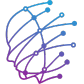
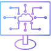
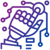

Somos uma empresa de tecnologia especializada em soluções de Inteligência Artificial (AI).
Desenvolvemos sistemas
inteligentes que transformam dados em decisões, automatizam processos e impulsionam a inovação em
negócios de todos os portes.
Combinando expertise técnica, visão estratégica e compromisso ético, criamos soluções personalizadas que
aprendem, evoluem e geram valor real.
Mais do que ferramentas tecnológicas, entregamos inteligência que move o futuro.

Em nossos laboratórios de pesquisa e desenvolvimento, a inovação é constante. É onde ciência,
criatividade e tecnologia se encontram para dar vida a soluções baseadas em Inteligência Artificial de
última geração.
Trabalhamos com times multidisciplinares — formados por engenheiros, cientistas de dados, designers e
especialistas de mercado — para criar algoritmos avançados, treinar modelos proprietários e experimentar
novas formas de aplicar IA de forma ética, segura e eficiente.

Na essência da nossa empresa estão as pessoas. Nossos colaboradores são especialistas apaixonados por
tecnologia, movidos por desafios e comprometidos em construir soluções que fazem a diferença.
Contamos com um time multidisciplinar que reúne talentos das áreas de ciência de dados, engenharia de
software, design, pesquisa acadêmica, negócios e inovação.
Essa diversidade de experiências é o que nos
permite enxergar além do óbvio e entregar soluções criativas, robustas e centradas nas reais
necessidades dos nossos clientes.
Mais do que conhecimento técnico, valorizamos a colaboração, a ética, o aprendizado contínuo e o
espírito de inovação. Acreditamos que a inteligência humana — em conjunto com a artificial — é o que nos
torna verdadeiramente transformadores.